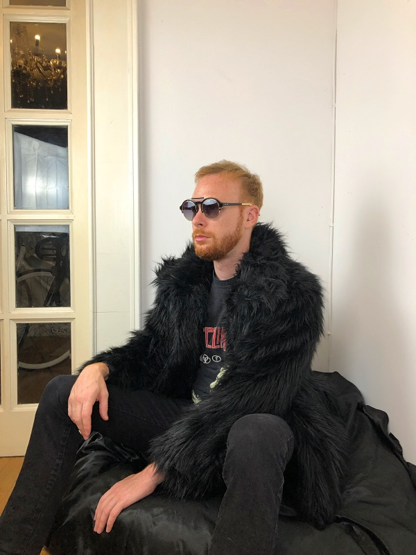
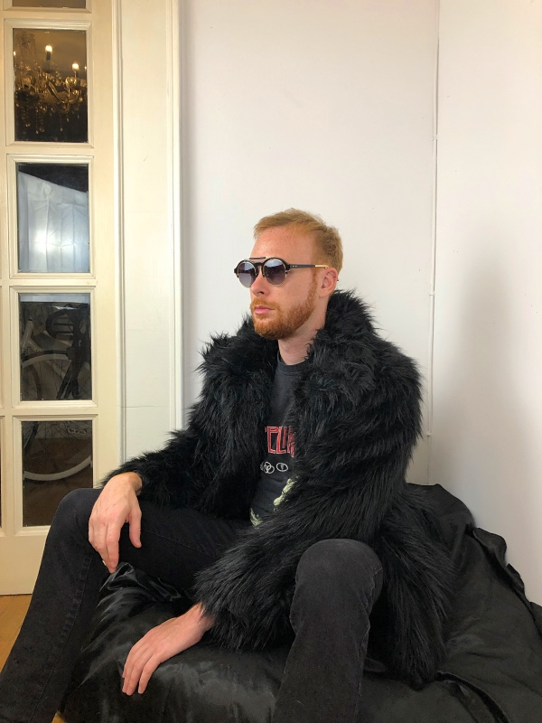

Ben Hegst, USA
October 9, 2019
Bug catcher
As a little kid, I was fascinated with bugs. I had a route. I knew where all the good boards, logs, and rocks were in the yard. I knew which ones would have the biggest centipedes underneath, which had the ant colonies (which were obviously a huge waste of time), and which ones to steer clear of as they had recently been turned into a yellow jackets’ nest. That was where you could find me as a little kid.
Walking alone from log to rock and flipping them over. I would have a jar with some holes punched in the lid where I would put the days catch. I suppose I was a bit weird. Most kids my age grew up with Nintendo, but my parents preferred we play outside. We were never allowed to have one. That was fine with me because collecting bugs was more fun anyway. After I had flipped every log, rock, and board, then flipped them back to where I found them (if you don’t put them back then there won’t be any bugs tomorrow) I would check to see if I had anything special. I was normally excited about a few that I had raced to grab before they scurried away. If you’re an extra-large bug, a different color, or something I haven’t seen yet it’s bad news for you. Special bugs went to the collection. I had a large piece of Styrofoam in the basement that I would pin my bugs to. I had a book that I would flip through to find out which bug I had found, and eventually, when we bought a computer I had learned how to type and print their names so I could label them. Special bugs found their way into a plastic Ziplock bag which I would put in the freezer. I don’t know how long it took my mom to get used to bags of bugs freezing to death next to dinner, but as far as my memory goes back, I had made it a pretty common practice. Once frozen and sufficiently dead I would go steal a pin from my mom’s sewing kit and stick them above their proper label. I was a strange kid. Always racing out of the house if I saw an interesting bug.
Sometimes I would spend hours trying to catch one. When people told me, I was weird I always assumed it was a compliment. I was quite proud of my “uniqueness.” My plan was to grow up to be a bug-ologist as I never could remember entomologist. Today, I am not an entomologist nor am I a bug-ologist. I’ve since left the country and now live in a big city. I don’t collect bugs anymore, although I do still hold a fascination for them when I come across them in nature. I like to think that even though I have grown up and put my bug-hunting days behind me, I’m still a bit of a weirdo at heart. I also hope that I’m never held accountable for the mass murder I’ve transgressed against the bug kingdom.

 
